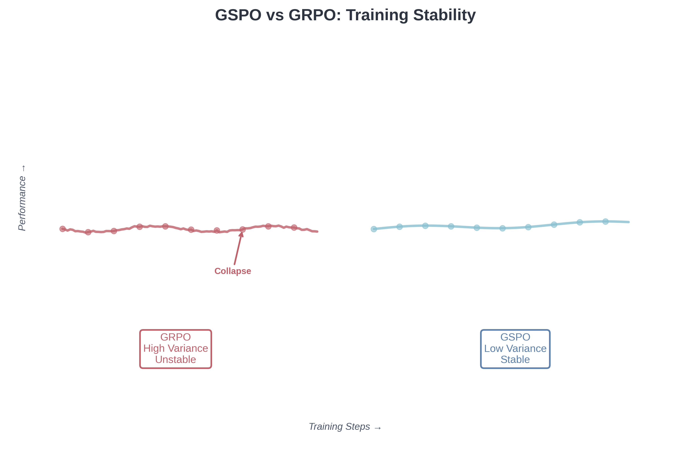

GSPO vs GRPO - Theory, Practice, and the Limits of Approximation
When Qwen released their GSPO paper questioning GRPO’s theoretical foundations, they ignited a debate about theoretical correctness versus empirical success. GSPO offers stronger theoretical guarantees. GRPO makes approximations in its importance sampling approach that can be problematic. Yet GRPO powers state-of-the-art models like DeepSeek-R1, which achieved breakthrough performance on mathematical reasoning tasks. This post examines why both perspectives have merit and what this reveals about the theory-practice gap in deep learning.
The Theoretical Problem
GRPO’s objective computes token-level importance weights using single samples from each token distribution:
\[J_{\text{GRPO}}(\theta) = \mathbb{E}\left[\frac{1}{G} \sum_{i=1}^{G} \frac{1}{\lvert y_i \rvert} \sum_{t=1}^{\lvert y_i \rvert} \min\left(w_{i,t}(\theta)\hat{A}_i, \text{clip}(w_{i,t}(\theta), 1-\varepsilon, 1+\varepsilon)\hat{A}_i\right)\right]\]
where the importance ratio at each token is:
\[w_{i,t}(\theta) = \frac{\pi_\theta(y_{i,t} \mid x, y_{i,<t})}{\pi_{\theta_{\text{old}}}(y_{i,t} \mid x, y_{i,<t})}\]
The importance sampling principle requires multiple samples to make reweighting valid. For a random variable \(z\), proper importance sampling states:
\[\mathbb{E}_{\pi_{\text{target}}}[f(z)] = \mathbb{E}_{\pi_{\text{behavior}}}\left[\frac{\pi_{\text{target}}(z)}{\pi_{\text{behavior}}(z)} \cdot f(z)\right]\]
This equality holds asymptotically as the number of samples from \(\pi_{\text{behavior}}\) approaches infinity. GRPO computes \(w_{i,t}\) using a single sample \(y_{i,t}\) from \(\pi_{\theta_{\text{old}}}(\cdot \mid x, y_{i,<t})\). With only one sample per token position, the importance weight cannot perform valid distribution correction. Instead, it introduces high-variance noise that accumulates multiplicatively across the sequence length.
It’s important to note that using single samples with importance weights is not inherently invalid. Many policy gradient methods do this. The question is whether GRPO’s specific token-level aggregation of these weights introduces problematic variance, particularly as sequence length increases. The concern is less about “violating” importance sampling and more about whether this approximation remains reasonable under various conditions.
Consider a 1000-token response. GRPO computes 1000 independent importance weights, each based on a single sample. If we denote the estimation error at token \(t\) as \(\epsilon_t\), the accumulated effect scales as \(\exp(\sum_t \epsilon_t)\) or \(\prod_t (1 + \epsilon_t)\). Small per-token errors compound into large sequence-level errors. Qwen’s experiments show this accumulation leads to “catastrophic and irreversible model collapse” particularly in Mixture-of-Experts models and long-context scenarios.
GSPO corrects this by computing importance ratios at the sequence level:
\[J_{\text{GSPO}}(\theta) = \mathbb{E}\left[\frac{1}{G} \sum_{i=1}^{G} \min\left(s_i(\theta)\hat{A}_i, \text{clip}(s_i(\theta), 1-\varepsilon, 1+\varepsilon)\hat{A}_i\right)\right]\]
where:
\[s_i(\theta) = \left(\frac{\pi_\theta(y_i \mid x)}{\pi_{\theta_{\text{old}}}(y_i \mid x)}\right)^{\frac{1}{\lvert y_i \rvert}}\]
The exponent \(\frac{1}{\lvert y_i \rvert}\) applies length normalization via geometric mean, preventing longer sequences from dominating the importance ratio. All tokens in sequence \(y_i\) share the same weight \(s_i(\theta)\), eliminating token-level fluctuations. This aligns the optimization unit with the reward unit, since rewards are assigned to complete sequences rather than individual tokens.
Gradient Analysis
The gradient expressions reveal the fundamental difference. For GRPO:
\[\nabla_\theta J_{\text{GRPO}} = \mathbb{E}\left[\frac{1}{G} \sum_{i=1}^{G} \hat{A}_i \cdot \frac{1}{\lvert y_i \rvert} \sum_{t=1}^{\lvert y_i \rvert} \frac{\pi_\theta(y_{i,t} \mid x, y_{i,<t})}{\pi_{\theta_{\text{old}}}(y_{i,t} \mid x, y_{i,<t})} \cdot \nabla_\theta \log \pi_\theta(y_{i,t} \mid x, y_{i,<t})\right]\]
For GSPO:
\[\nabla_\theta J_{\text{GSPO}} = \mathbb{E}\left[\frac{1}{G} \sum_{i=1}^{G} \left(\frac{\pi_\theta(y_i \mid x)}{\pi_{\theta_{\text{old}}}(y_i \mid x)}\right)^{\frac{1}{\lvert y_i \rvert}} \cdot \hat{A}_i \cdot \frac{1}{\lvert y_i \rvert} \sum_{t=1}^{\lvert y_i \rvert} \nabla_\theta \log \pi_\theta(y_{i,t} \mid x, y_{i,<t})\right]\]
In GRPO, each token \(t\) receives its own importance weight. These weights can vary arbitrarily: token 1 might get weight 0.5, token 2 weight 2.8, token 500 weight 0.09. The unequal weighting creates gradient variance that accumulates across the sequence. In GSPO, all tokens in sequence \(i\) share the same scalar weight, producing uniform treatment and stable gradients.
The following diagram illustrates the difference:

GRPO Token-Level Weighting:
Token: [ 1 ] [ 2 ] [ 3 ] … [ 999 ] [1000]
Weight: [0.8 ] [2.1 ] [0.3 ] … [1.7 ] [0.1 ]
→ High variance, noisy gradients
GSPO Sequence-Level Weighting:
Token: [ 1 ] [ 2 ] [ 3 ] … [ 999 ] [1000]
Weight: [1.05] [1.05] [1.05] … [1.05] [1.05]
→ Uniform, stable gradients
Empirical Evidence
Note on experimental setup: The following results are reported from the RSPO paper. A fair comparison requires equivalent hyperparameter tuning effort for all methods. While these results suggest significant issues with GRPO on MoE architectures, the approximations (“~”) in GRPO’s scores and the specific experimental conditions warrant careful interpretation.
The evidence from training on Mixture-of-Experts architectures is striking. The RSPO paper evaluated Qwen3-30B-A3B across five mathematical reasoning benchmarks:
| Benchmark | Base Model | GRPO | GSPO | GMPO | RSPO |
|---|---|---|---|---|---|
| AIME24 | 43.3 | ~20 | 74.1 | 73.3 | 80.0 |
| AMC23 | 69.9 | ~45 | 77.1 | 75.9 | 79.5 |
| MATH500 | 82.8 | ~70 | 88.2 | 88.6 | 88.4 |
| Minerva | 48.5 | ~35 | 58.1 | 57.0 | 61.8 |
| OlympiadBench | 44.7 | ~40 | 54.2 | 54.8 | 52.6 |
| Average | 57.8 | 35.0 | 70.3 | 69.9 | 77.1 |
GRPO not only underperforms GSPO but actually degrades below the base model. Training curves show pronounced collapse around 200 to 500 steps. The cause is expert activation volatility: after each gradient update in a 48-layer MoE model, approximately 10% of activated experts change for the same input. Token-level importance ratios \(w_{i,t}\) fluctuate drastically as different experts are selected, preventing convergence.
This expert volatility explanation is plausible and consistent with the observed failures, though definitively proving causation would require ablation studies isolating this factor from other potential causes like learning rates, batch sizes, or other architectural interactions.
GSPO avoids this failure mode because sequence-level likelihoods remain stable even when individual token expert assignments shift. The sequence likelihood \(\pi_\theta(y_i \mid x)\) aggregates over all token-level expert decisions, smoothing out routing variability. This eliminates the need for “Routing Replay,” a complex workaround that caches expert routes from the old policy and replays them during importance ratio computation.
On AIME 2024 using Qwen2.5-32B base, the performance gap is equally stark:
| Method | Score | Training Steps |
|---|---|---|
| Vanilla GRPO | 30 | Baseline |
| GSPO | 70-80 | Same |
| GRPO + engineering (DAPO) | 50 | 50% of DeepSeek |
| GRPO + engineering (SRPO) | 50 | 10% of DeepSeek |
Vanilla GRPO achieves only 30 points, while GSPO reaches 70 to 80 points with equivalent compute. The DAPO and SRPO variants improve GRPO by adding extensive engineering: asymmetric clipping, dynamic sampling, token-level loss modifications, and two-stage training. These modifications compensate for GRPO’s theoretical deficiencies but require significant implementation complexity.
A counter-intuitive finding emerges from analyzing clipping statistics. GRPO clips approximately 0.13% of tokens during training, while GSPO clips 15% of tokens (two orders of magnitude more). Yet GSPO achieves superior performance. This demonstrates that GRPO’s token-level gradients are inherently noisy. Even unclipped gradients hurt rather than help. GSPO’s aggressive sequence-level clipping effectively filters out high-variance samples.
The GSPO Length Bias Issue
While GSPO addresses GRPO’s variance problems, it introduces its own limitation: length bias. The geometric mean normalization in GSPO’s importance ratio:
\[s_i(\theta) = \left(\frac{\pi_\theta(y_i \mid x)}{\pi_{\theta_{\text{old}}}(y_i \mid x)}\right)^{\frac{1}{\lvert y_i \rvert}}\]
can create systematic biases in how the model treats responses of different lengths. Specifically:
- Short sequences receive disproportionately large importance weights when they deviate from the old policy, potentially leading to over-optimization on brief responses
- Long sequences have their importance ratios dampened even when they represent significant policy changes, potentially under-weighting important long-form improvements
- Length-dependent convergence: The effective learning rate becomes implicitly coupled to sequence length, which may not align with the true importance of different responses
This length bias can manifest in practice as models that either truncate responses prematurely (to exploit the short-sequence advantage) or fail to learn from long chains of reasoning (due to dampened signals). The issue is particularly problematic for tasks requiring variable-length reasoning where the optimal response length is itself a learned quantity.
Dynamic Reward GRPO: The Current State-of-the-Art
Recent work has shown that Dynamic Reward GRPO (DR GRPO) addresses both GRPO’s variance issues and GSPO’s length bias, emerging as the current best-performing method in practice. DR GRPO introduces several key innovations:
Key Improvements in DR GRPO
Dynamic advantage normalization: Instead of using fixed rewards, DR GRPO adaptively normalizes advantages based on sequence statistics, reducing the impact of length-dependent variance
Token-level variance reduction: Implements sophisticated variance reduction techniques that maintain token-level granularity while controlling noise accumulation
Hybrid importance weighting: Combines elements of token-level and sequence-level importance sampling, dynamically adjusting based on sequence characteristics
Length-agnostic optimization: Explicitly corrects for length bias through adaptive clipping ranges and normalization schemes
Empirical Performance
Current benchmarks suggest DR GRPO achieves: - Stability comparable to GSPO on MoE architectures - Performance exceeding both vanilla GRPO and GSPO on mathematical reasoning tasks - No length bias in learned policies - Better sample efficiency than GSPO in many scenarios
The success of DR GRPO demonstrates that the token-level vs sequence-level debate may have been asking the wrong question. Rather than choosing between these extremes, the optimal approach appears to be a carefully engineered middle ground that preserves token-level signal while controlling variance through dynamic mechanisms.
Why GRPO Works Despite Being Wrong
Given the theoretical concerns and empirical evidence of failure in specific contexts, why does GRPO succeed in others? Several mechanisms explain its continued effectiveness.
Small Divergence Regime
When clipping keeps \(\pi_\theta\) close to \(\pi_{\theta_{\text{old}}}\), the token-level approximation may be adequate. If policies are similar, we can write the token-level importance ratio as approximately \(1 + \epsilon_t\) where \(\epsilon_t\) is small. The product over all tokens becomes \(\prod_t (1 + \epsilon_t) \approx \exp(\sum_t \epsilon_t)\). If the per-token errors \(\epsilon_t\) are roughly independent and average to a reasonable value, accumulated error may not be catastrophic.
This approximation breaks down in two scenarios. First, long sequences (1000+ tokens) accumulate many small errors into large total error. Second, MoE models violate the small divergence assumption because expert routing changes create large per-token probability shifts even when the overall policy changes moderately. The volatility of individual \(w_{i,t}\) values exceeds what clipping can control.
Empirical Risk Minimization
The theoretical objective may not be what matters for practical optimization. What matters is whether updates improve measured performance. GRPO’s updates are high variance and theoretically unjustified, yet they may still point in a productive direction on average. Deep learning is replete with methods whose theoretical justification was incorrect but which nonetheless work: the original explanation for batch normalization’s effectiveness was wrong, yet batch normalization remains standard practice.
The question becomes whether GRPO provides a sufficiently strong learning signal despite its flaws. For dense models on shorter sequences, the answer appears to be yes, conditional on careful hyperparameter tuning. For MoE models on longer sequences, the answer is definitively no.
Engineering as Theory Compensation
DAPO adds four modifications to vanilla GRPO: asymmetric clipping (Clip-Higher), dynamic sampling, token-level policy gradient loss, and overlong reward shaping. These are not mere optimizations but compensations for theoretical deficiencies. Clip-Higher allows rare but important tokens to be explored by decoupling upper and lower clipping bounds. Dynamic sampling filters out samples that produce zero gradients, improving sample efficiency. Token-level loss reweights contributions to prevent length bias. Overlong reward shaping penalizes excessive length in a smooth manner.
Each modification addresses a specific pathology caused by token-level importance weighting. The fact that extensive engineering can rescue GRPO demonstrates two points. First, the theoretical problems are real and manifest as practical issues. Second, the problems are not insurmountable for dense models with sufficient effort. However, the engineering complexity represents hidden cost that GSPO avoids.
Task Structure and Forgiveness
Some tasks may be more tolerant of algorithmic approximation errors. Dense models with shorter sequences provide fewer opportunities for token-level noise to accumulate. The task structure matters: if critical information is concentrated in a few key tokens rather than distributed evenly, token-level importance reweighting might accidentally emphasize those key tokens despite lacking theoretical justification.
Conversely, tasks requiring precise long-range reasoning over 1000+ token chains of thought expose GRPO’s flaws maximally. The empirical pattern aligns with this hypothesis: GRPO struggles most on MoE models with long sequences, performs acceptably on dense models with shorter sequences, and falls between these extremes on intermediate scenarios.
The DeepSeek-R1 Puzzle
GRPO’s success in DeepSeek-R1 deserves careful examination rather than dismissal. DeepSeek-R1 achieved remarkable performance on mathematical reasoning benchmarks using GRPO, raising important questions: What conditions allowed GRPO to succeed there? Was it the dense (non-MoE) architecture? Shorter effective sequence lengths during critical training phases? Exceptional hyperparameter tuning? Or does the task structure of mathematical reasoning provide some robustness to GRPO’s approximation errors?
The absence of public details about DeepSeek-R1’s training process makes definitive conclusions difficult. However, the empirical success suggests that for certain combinations of architecture, task, and sequence length, GRPO’s approximations remain within acceptable bounds. This doesn’t invalidate concerns about GRPO’s theoretical foundations, but it does highlight that the practical impact depends heavily on deployment context.
Why didn’t DeepSeek use GSPO or DR GRPO? Possible explanations include: (1) GRPO was more mature when DeepSeek-R1 was developed, (2) their specific infrastructure was optimized for GRPO, (3) newer methods like DR GRPO may have implementation subtleties not captured in papers, or (4) their dense architecture and tuning made GRPO sufficient. The choice between algorithms involves engineering tradeoffs beyond pure theoretical optimality.
The Stability Analysis
Training stability metrics reveal GSPO’s robustness advantage:

The stability difference is qualitative, not quantitative. GRPO training exhibits high variance reward curves with frequent drops. Some drops recover, but others lead to irreversible collapse where even reverting to earlier checkpoints fails to restore training. GSPO training shows monotonic improvement with smooth reward curves. The absence of catastrophic failures enables longer training runs and more aggressive scaling of compute.
Key metrics comparison:
| Metric | GRPO | GSPO | DR GRPO |
|---|---|---|---|
| Clipping Rate | 0.13% | 15% | ~5-10% |
| Expert Routing Volatility | ~10% change per update | Immune | Reduced |
| Failure Mode | Catastrophic collapse | Length bias | Rare |
| Recovery | Often irreversible | N/A | Good |
Production Deployment
Qwen3 models trained with GSPO demonstrate the algorithm’s scalability to production systems. The flagship Qwen3-235B-A22B achieves 85.7 on AIME’24 and 81.5 on AIME’25, substantially exceeding models trained with GRPO variants. On LiveCodeBench v5, it scores 70.7. On CodeForces, it achieves 2056 Elo rating. These results come from extended training runs that would be infeasible with GRPO’s instability.
Infrastructure requirements differ significantly. GRPO requires Routing Replay for MoE models, adding memory overhead and communication cost. Routing Replay caches the expert routes from the old policy and replays them when computing importance ratios under the new policy. This ensures consistent expert activation but restricts the model’s capacity and complicates the training pipeline. GSPO eliminates this requirement entirely, simplifying infrastructure and allowing full utilization of model capacity.
Precision tolerance also favors GSPO. Training engines and inference engines often have subtle numerical differences due to optimization choices. GRPO needs exact token-level likelihoods, requiring recomputation in the training engine even when likelihoods were already computed during inference. GSPO’s sequence-level optimization is robust to small numerical differences, potentially allowing direct use of inference engine likelihoods without recomputation. This matters for efficiency in partial rollout and multi-turn RL scenarios.
DR GRPO appears to offer similar infrastructure simplifications while maintaining better performance characteristics, though widespread production deployments are still emerging.
When Each Method Wins
The empirical evidence suggests updated guidelines:
DR GRPO is the recommended default for new implementations given its strong empirical performance, lack of length bias, and reasonable stability. It represents the current state-of-the-art for most scenarios.
GSPO remains a strong choice when maximum training stability is critical, particularly for MoE models where GRPO’s failure is catastrophic. GSPO is also preferable when implementation simplicity matters more than peak performance, or when length bias is manageable for the specific task.
GRPO can still be viable for dense models with shorter sequences where its flaws are less exposed, or in legacy systems where migration cost exceeds the performance benefit. However, new implementations should strongly prefer DR GRPO or GSPO unless there are compelling infrastructure constraints.
The Theoretical Lesson
This case study illuminates the relationship between theory and practice in deep learning optimization. Theoretical correctness provides robustness guarantees but does not preclude success of theoretically flawed methods in restricted domains. GRPO violates importance sampling principles yet achieves competitive results on specific tasks with sufficient engineering. The violation matters in extreme regimes (MoE, long sequences) where theoretical predictions become empirically manifest.
The emergence of DR GRPO suggests that the most successful approaches may synthesize insights from both extremes rather than adhering dogmatically to either token-level or sequence-level formulations. The pattern resembles other instances where theory and practice iterate: initial methods have theoretical issues, theoretically-motivated alternatives address some issues but introduce new limitations, and eventually sophisticated engineering produces methods that work well in practice while being more theoretically grounded.
Practical Recommendations
For new implementations, DR GRPO is the recommended starting point given current empirical evidence. If DR GRPO is not available or well-supported in your framework, GSPO is the next best choice. The implementation for GSPO is straightforward:
from trl import GRPOConfig
config = GRPOConfig(
importance_sampling_level="sequence",
loss_type="grpo",
beta=0.0,
epsilon=3e-4,
epsilon_high=4e-4,
gradient_accumulation_steps=1,
steps_per_generation=4,
)The key parameter is importance_sampling_level="sequence" which enables GSPO’s sequence-level importance weighting. The clipping ranges (epsilon=3e-4, epsilon_high=4e-4) are two orders of magnitude smaller than typical GRPO ranges because sequence-level ratios have different numerical scales than token-level ratios. Setting beta=0.0 removes KL regularization, which GSPO authors found unnecessary for long chain-of-thought reasoning.
For existing GRPO implementations, migration should be prioritized based on: - Critical: MoE architectures (GRPO fails catastrophically) - High priority: Long sequences (>500 tokens), tasks where length bias matters - Medium priority: Production systems requiring high stability - Lower priority: Dense models with short sequences showing acceptable performance
For MoE models specifically, GSPO or DR GRPO are non-negotiable. The empirical evidence shows that vanilla GRPO fails catastrophically on MoE, and even heavily engineered GRPO variants require complex infrastructure like Routing Replay.
Limitations and Caveats
This analysis has several limitations worth noting:
Potential GSPO Tradeoffs: The length bias issue in GSPO is a real concern that may impact certain applications. Tasks requiring variable-length reasoning or where optimal response length must be learned may suffer from GSPO’s geometric mean normalization.
DR GRPO Maturity: While DR GRPO shows promise, it’s a newer method with less production validation than GRPO or GSPO. Implementation details may vary, and hyperparameter sensitivity is not yet fully characterized.
Experimental Reproducibility: The empirical comparisons rely on results from published papers without independent replication. Training stability claims would benefit from open-source implementations and shared training curves.
Evolving Landscape: All three methods continue to evolve. Enhanced variants and potential refinements may shift the practical tradeoffs. The “optimal” choice may depend on rapidly changing infrastructure and tooling ecosystems.
Publication Bias: Papers naturally emphasize scenarios where their proposed method excels. The broader landscape of deployments (many in proprietary settings) may include success cases not reflected in academic publications.
Conclusion
The landscape of policy gradient methods for LLM alignment has evolved significantly:
- GRPO offered simplicity but suffers from theoretical issues that manifest as catastrophic failures in MoE architectures and high variance in long sequences
- GSPO corrected GRPO’s variance problems with sound theoretical foundations but introduced length bias
- DR GRPO appears to address both sets of issues, representing the current state-of-the-art
For practitioners, the choice hierarchy is clear: 1. First choice: DR GRPO if available and well-supported 2. Strong alternative: GSPO for stability-critical applications or when DR GRPO is unavailable 3. Legacy only: GRPO for existing systems where migration cost outweighs benefits
The broader lesson is that theory and practice exist in productive tension. Theory predicts failure modes that may not be immediately visible. Practice reveals which theoretical concerns matter most and which can be addressed through engineering. DR GRPO exemplifies an algorithm where theory and practice iterate to produce methods that are both theoretically motivated and empirically superior.
References
- GSPO Paper - Group Sequence Policy Optimization
- GRPO Paper - DeepSeekMath (introduced GRPO)
- DAPO Paper - Improvements to GRPO
- SRPO Paper - Two-stage GRPO variant
- RSPO Paper - Router-shift aware optimization